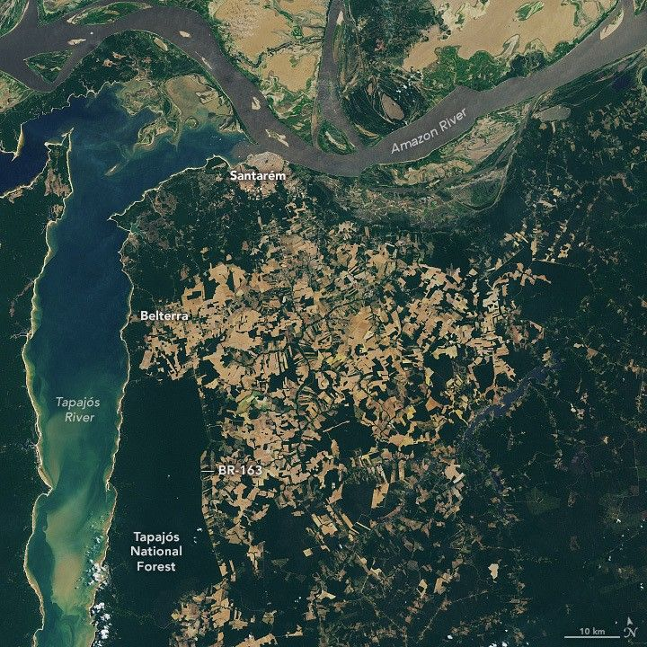

From Forest to Field in Pará
Human presence is evident in various forms in the northern Brazilian state of Pará. In the Santarém region, near the confluence of the Amazon and Tapajós rivers, signs of land use include urban development, cleared pastures and farmland, and protected forests. The OLI (Operational Land Imager) on Landsat 8 acquired these images on September 23, 2024. The remarkably cloud-free images were captured during the region’s dry season.
The detailed images below show two urban centers along the rivers’ banks. Santarém (top) is a port city near the “meeting of waters,” where the Amazon’s brown, sediment-rich waters meet the clearer, blue-green waters of the Tapajós. (Another well-known “meeting of the waters” lies about 600 kilometers to the west, near Manaus.) The city’s port is accessible via BR-163, one of the region’s main roadways, and plays an important role in the distribution of several key commodities produced in Pará, including soybeans, corn, and other agricultural products.
A detailed view shows the city of Santarém and its dense gray-brown urban infrastructure. A port is visible along the city's shore, and several ships appear as small rectangles in the rivers. Green forest around the city is interspersed with roadways.
A detailed view shows the town of Belterra near the blue-green Tapajós River. Rectangular and irregular fields in shades of brown surround the town's gridded patterns of streets. Green forested land runs along the coast toward the left and across the bottom of the image.
The BR-163 continues south through Belterra, a town that sits amid a patchwork of cleared and uncleared forest (second image above). Fields like these across the Amazon, often used for agriculture and raising livestock, frequently extend outward from rivers and roads, forming an array of patterns. This network of fields spans the plateau east of Belterra and south of Santarém.
Tapajós National Forest encompasses the lush, green forested area east of the Tapajós River and west of BR-163. This forest, which covers more than 5,300 square kilometers (2,000 square miles), is a type of conservation unit that emphasizes the sustainable use of the forest’s resources as well as scientific research. Most of this protected area is dense ombrophilous forest—a diverse ecosystem composed of tall trees, woody vines, palms, orchids, and ferns that thrive in the rainforest’s wet environment.